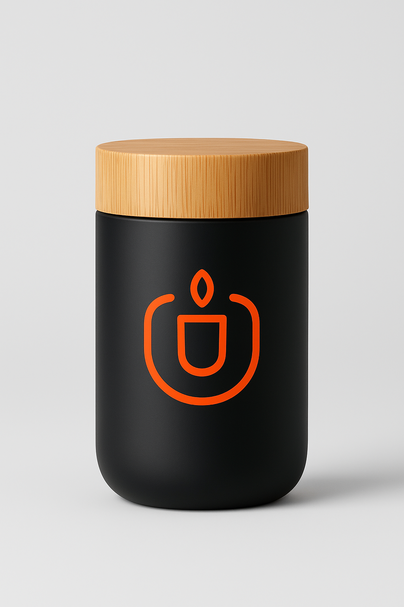

”SmartCup har förändrat mina morgnar – äntligen slipper jag kallt kaffe!” – Anna, student
"Jag uppskattar verkligen designen. Den är både snygg och funktionell." – Sofia Karlsson, grafisk designer
"Perfekt för mina långa möten – jag slipper kallt kaffe helt och hållet." – Johan Persson, projektledare
”Som programmerare älskar jag hur enkel och praktisk den är.” – Erik, utvecklare